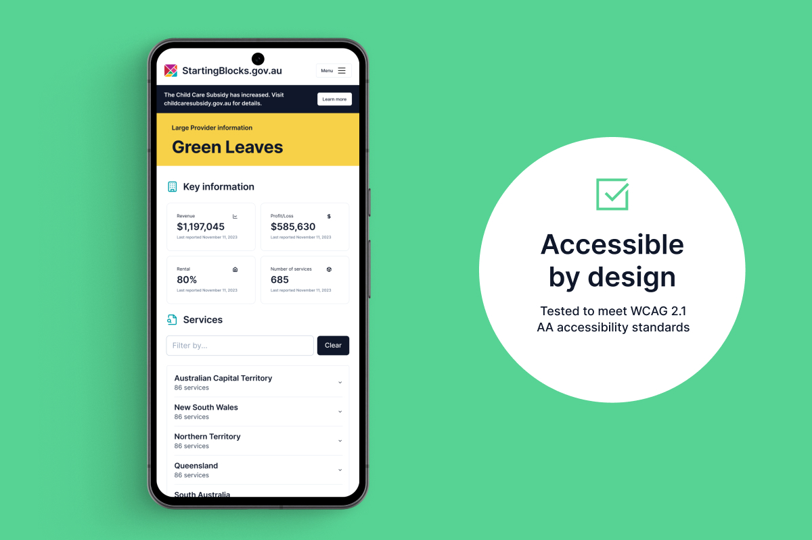
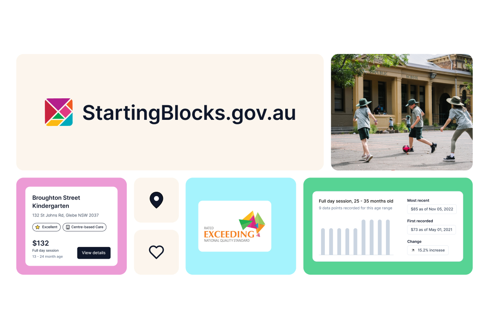
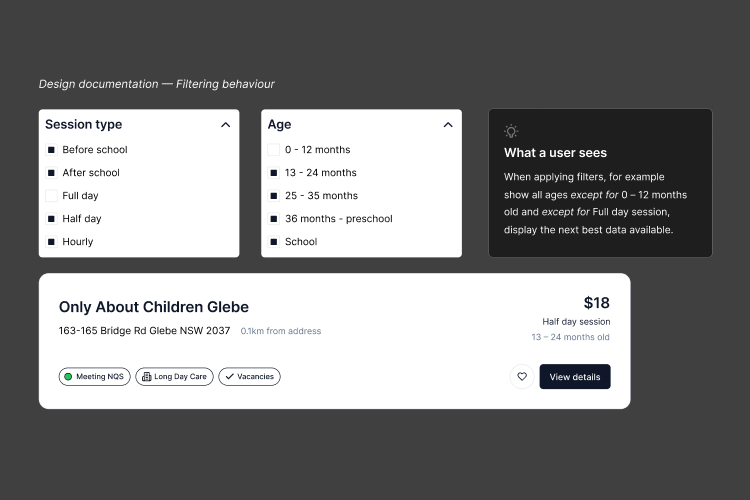
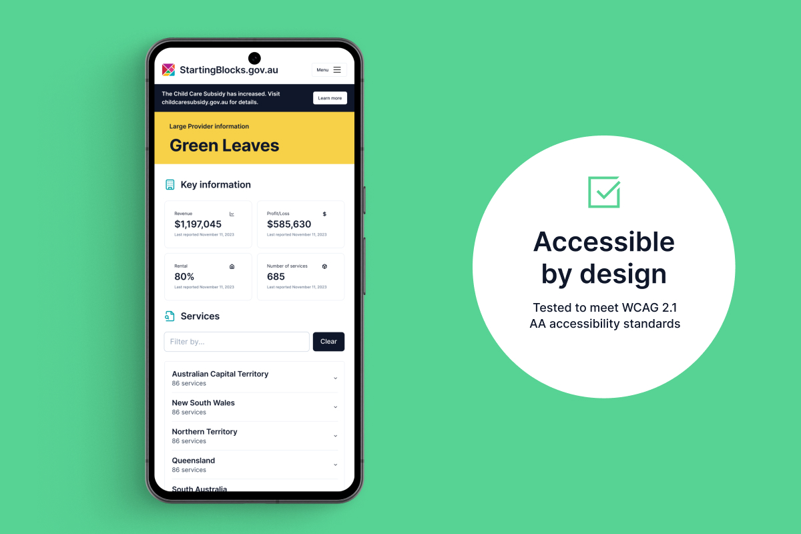
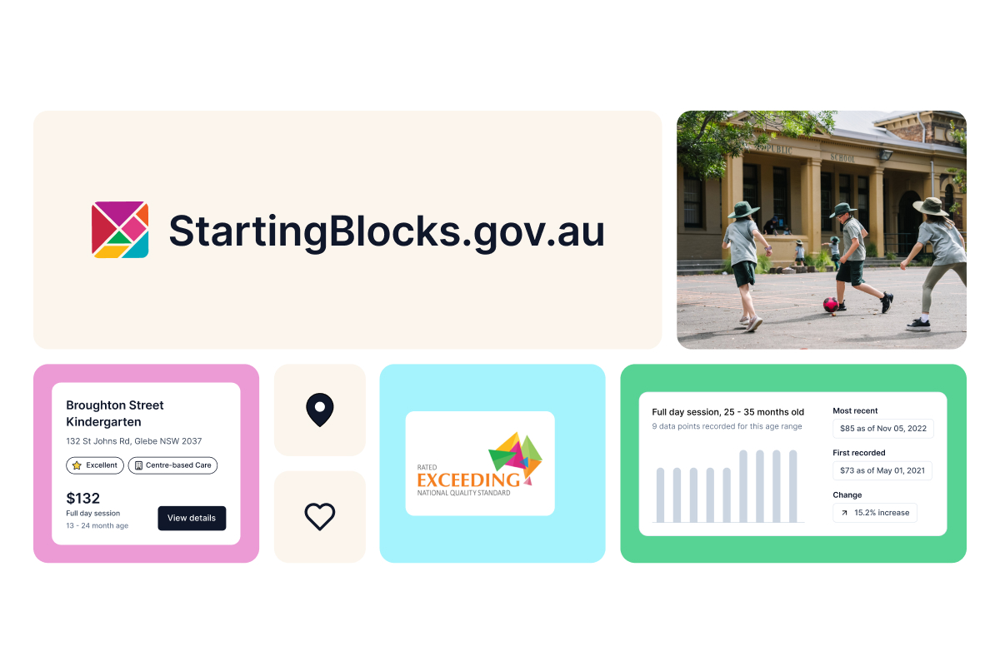
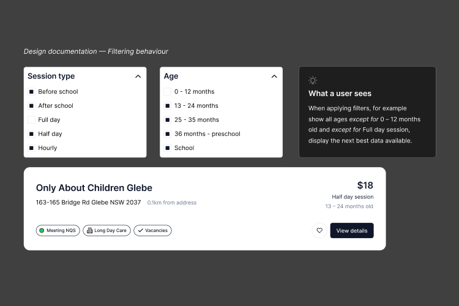

Starting Blocks
Responsive website
Research shows quality early education and care leads to better health, education and employment outcomes later in life. Finding the right early childhood education is hugely important to families.
Over 18 weeks we redesigned and launched the new look StartingBlocks.gov.au – Australia's free government website for families to find early childhood education services and learn about quality early learning.
Projects
Links
Startingblocks.gov.au website is an essential resource providing information and access to Australia’s early childhood education and care.
Centred around the National Quality Framework (NQF), ACECQA's family focused website provides parents and carers with the tools to find and compare services, calculate their childcare subsidy, and access valuable information resources.
Research shows quality early education and care leads to better health, education and employment outcomes later in life. 90% of a child’s brain develops by age five, and their earliest environments and experiences are crucial to brain development and the foundation for learning.
Centred around the National Quality Framework (NQF), ACECQA's family focused website provides parents and carers with the tools to find and compare services, calculate their childcare subsidy, and access valuable information resources.
Research shows quality early education and care leads to better health, education and employment outcomes later in life. 90% of a child’s brain develops by age five, and their earliest environments and experiences are crucial to brain development and the foundation for learning.
Finding the right education is of huge importance to families. The current landscape is filled with outdated information, across fragmented experiences, leaving them frustrated and unsure.
Not only that, but the previous StartingBlocks website was built on an old version of Umbraco and was weeks away from the software's official end of life.
How can we provide an experience that provides a clear path to quality information and tools to help them find the best educational start for each child?
Not only that, but the previous StartingBlocks website was built on an old version of Umbraco and was weeks away from the software's official end of life.
How can we provide an experience that provides a clear path to quality information and tools to help them find the best educational start for each child?

Our partnership with NSW Department of Planning, Industry and Environment (DPIE) began with an initial 4 weeks to work with the scheme's many varied stakeholders — policy makers, regulators, auditors and businesses carrying out the work to create energy savings — culminating in a report with evidence to support the continuation and expansion of the scheme.
Following the acceptance of that report and other work by the Department, the Energy Savings Scheme was set to increase in scope and complexity, with the introduction of the Energy Security Safeguard.
Revolutionary change is incredibly hard in complex systems.
Following the acceptance of that report and other work by the Department, the Energy Savings Scheme was set to increase in scope and complexity, with the introduction of the Energy Security Safeguard.
Revolutionary change is incredibly hard in complex systems.
We set out prototyping and testing many potential requirements; standardised processes, automation, improved data collection, and improved information access. The nuance in our learning was that the scheme needs to deliver accelerating energy savings to meet Net Zero targets, but not advance in such a pace that the varied web of businesses carrying out energy savings activities could not adapt.
User testing revealed that while there is no 'one-size-fits-all' process for energy savings, the required data is the same. This powerful insight led to the true answer. The most effective way to fight fragmentation is through access to clean, consolidated data rather than trying to control and manage all tasks.
User testing revealed that while there is no 'one-size-fits-all' process for energy savings, the required data is the same. This powerful insight led to the true answer. The most effective way to fight fragmentation is through access to clean, consolidated data rather than trying to control and manage all tasks.
 





“It has been inspiring to see how design research and user testing has ensured we cater to families from all walks of life. Moreover, by raising awareness of the NQS and promoting high-quality early education, this platform is helping to shape the future of early childhood education in Australia.
It's inspiring to see how design innovation can drive positive change at scale, and I do not doubt that StartingBlocks.gov.au will continue to make a lasting difference."
It's inspiring to see how design innovation can drive positive change at scale, and I do not doubt that StartingBlocks.gov.au will continue to make a lasting difference."
“I want to thank you deeply Sam for your leadership, patience with all of our feedback, and your excellent customer service. We’ve all learnt so much from you and our door is always open. I hope we can work together again in the future.”
“This opened my eyes to a whole bunch of things as far as really understanding those national quality standards that you're looking for.”